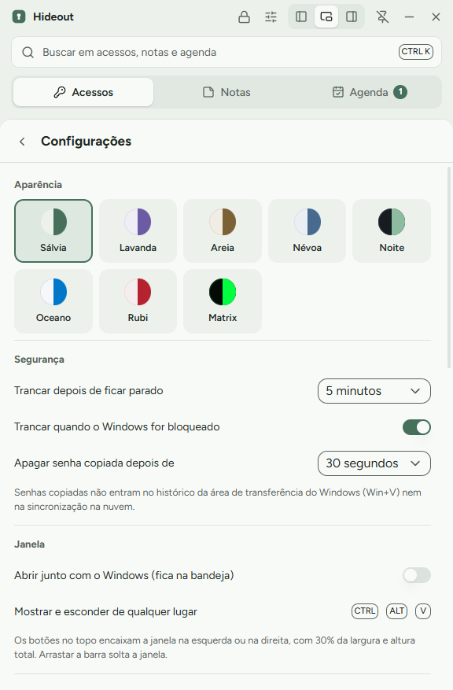

Ctrl+Alt+V
Mostra ou esconde o Hideout de qualquer lugar do Windows.
Tudo o que dá para fazer pelo teclado e cada ajuste das Configurações, com animações mostrando como funciona.
Mostra ou esconde o Hideout de qualquer lugar do Windows.
No campo de login de qualquer site, digita usuário, Tab, senha e Enter.
Abre a busca em acessos, notas e agenda. Enter copia a senha.
Troca entre Acessos, Notas e Agenda.
Cria um item novo na aba atual. Fecha o painel aberto.
Começa com 30% da largura da tela. Os três botões na barra do topo encaixam na esquerda, na direita ou deixam flutuar. Arrastar a barra solta a janela. O alfinete mantém o Hideout por cima das outras janelas.

Clique nos pontinhos. A senha vai para a área de transferência marcada para não entrar no histórico do Win+V nem na nuvem, e some sozinha no tempo que você escolher.
O Hideout entende datas escritas do jeito que você fala. Com data e hora, a tarefa vira lembrete com notificação do Windows.
